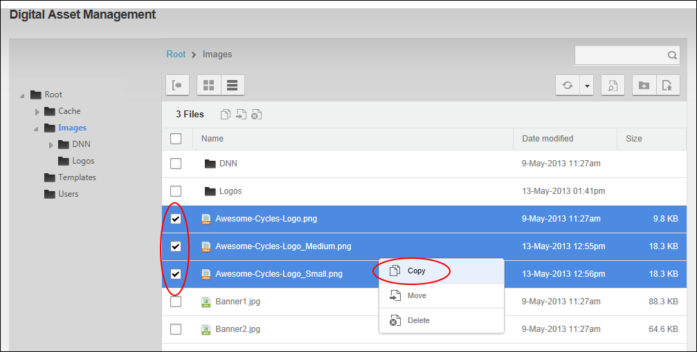
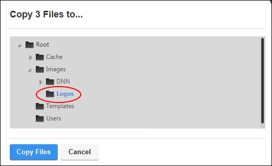

Copying Files
How to copy one or more files from one folder to another folder of the Digital Asset Management Pro module. DNN Platform users (including anonymous users) must be granted Write to Folder permission to both the folder where the file is located and the folder that the file is being copied to. Evoq Content and Evoq Content Enterprise, users (including anonymous users) must be granted Copy permission to both the folder where the file is located and the folder that the file is being copied to.
- Navigate to Admin >
 File Management - OR - Go to a Digital Asset Management Pro module.
File Management - OR - Go to a Digital Asset Management Pro module.
- Navigate to and select the folder where the files to be copied are located. See "Navigating to and Selecting Folders"
- In the File Window, beside each file to be copied - OR - in the File Window Title Bar to select all items that are currently displayed and then deselect any folders than have been selected. This is required because folders cannot be copied and the Copy option will not display until the folders are deselected. Tip: See "Navigating to Files" learn how to select different or additional files than those on the current page.
- Right click on a selected item and select
 Copy from the drop down menu - OR - Click the Copy button in the Files Window Tool Bar.
Copy from the drop down menu - OR - Click the Copy button in the Files Window Tool Bar.

- This displays the Folder Navigation Tree in a new window. Choose the folder where the files will be copied too.

- Click the Copy Files button.
Tip: If you are only coping one file you can simply right click on the item and select Copy from the drop down list.